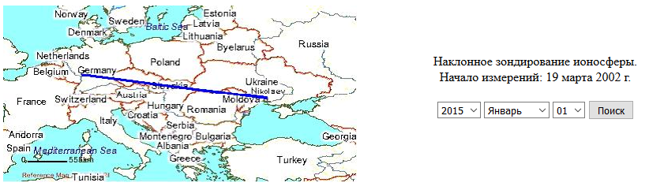
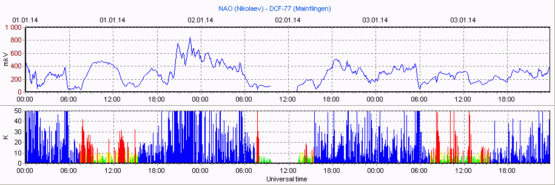
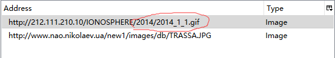

大三暑期实习中用Python自动保存太阳活动数据
大三结束，学校（乌克兰哈尔科夫国立航空航天大学）安排为期一个月的暑期实习，实习地点为与学校相邻的一个航空航天研究所，这次实习收获良多，大体了解了研究所的研究内容，接触了一些专业软件，借这个机会学会了微软Office的Excel，实习前Excel小白一个，连利用数据画图表都不熟练，实习后，我已经会用数据透视图分析数据，几十万数据处理逼迫我使用宏来做一些重复性动作，也大体了解了VBA代码，也可以磕磕碰碰写出可以使用的VBA代码。
最最最重要的是，这次实习让我接触到了Python这门非常优秀简洁美观的编程语言，从此对Python爱不释手，用它写一些爬虫，一些小工具实在是太方便了。
事情是这样的，有一次，实习老师布置了一个任务，让我搜集2013年到2015年每天太阳活动的数据，并给了我一个网址，网页部分内容如下：

我需要做的工作就是选择年月日，然后点击后面的查询，然后网页会显示这一天的太阳活动图表，然后我再将图表保存到本地文件夹，并以当天日期命名。

无疑，这个任务很简单，但是很麻烦，如果不停的查询并保存三年一千多条数据，肯定要头昏脑涨了……
突然想起以前在某论坛看过一篇介绍网络“爬虫”的文章，似乎“爬虫”可以帮助我更轻松的完成这个任务。然后去谷歌搜索了一下“爬虫”这个关键词，发现大部分人推荐使用Python来写爬虫，也更确信了“爬虫“可以帮助我完成任务。
后面就是装Python，配置环境变量，各种问题的发现与解决……然后参照网上写的爬虫自己尝试写一写类似代码。
经过观察需要保存的图像地址，发现，图像地址是有规律的，前面地址都是一样的，后面图像是以年月日命名的gif文件，类似这样：

这样就可以直接循环抓取图像了,程序会以年和月建立文件夹和子文件夹，并将自动图像数据保存到对应文件夹里。
代码如下：（这算是我写的第一个python程序了）1
2
3
4
5
6
7
8
9
10
11
12
13import os
import urllib
year='2014' //年份
if not os.path.exists(year): //如果文件夹不存在就新建文件夹
os.makedirs(year)
for month in range(1,13): //月份1-12
path='%s/%s' %(year,month) //保存路径
if not os.path.exists(path):
os.makedirs(path)
for day in range(1,32): //日期1-31
urllib.urlretrieve('http://212.111.210.10/IONOSPHERE/%s/%s_%s_%s.gif' %(year,year,month,day),'%s/%s_%s_%s.gif'% (path,year,month,day))
虽然程序并不完善，比如，每月都以31天计算，没有考虑大小月，导致每次抓取图片后还要去文件夹里把没有31号的那天的图像文件手动删除，但这相比于一个个保存图像，已经省力了非常多了。
也许老老实实一个个保存图像只需要一小时，而我安装学习python和编写代码耗费的时间远远大于一小时，但是，程序写出来后，抓取三年数据所需的时间不到两分钟，而且，我可以轻易的修改代码去抓取任意年月日的图像数据，而不再需要大量的重复劳动。
后来实习中还有一个任务是每天的固定时间去一个网站保存数据，这个数据是实时更新的，每天都要在那一个时间点附近登录网站去保存数据，但我有时会有事导致不能上网保存数据，所以我将上面的程序稍微修改了一下，让它每天固定时刻去抓取数据，但我电脑不可能一直开机去运行这个爬虫程序，于是我将它运行在了Cloud9云端IDE里面，这样就可以二十四小时运行并在固定时间抓取数据了，我只需要过段时间将云端保存的数据保存到本地即可。
总之，Python实在是在实习中帮了我大忙。人生苦短，快用Python。